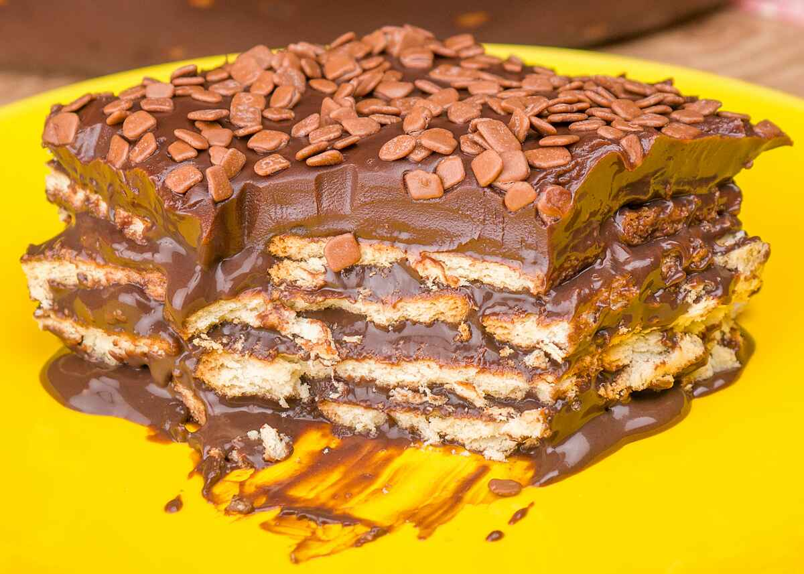

Brazilian Chocolate Pave

Description
A simple and delicious Brazilian delicacy, try cooking this different dish to impress your friends.
Ingredients
For the cream layer
- 2 sweet condensed milk cans
- 4 cups of milk
- 2 tablespoons of corn starch
- 4 strained egg yolks
For the whipped cream layer
- 1 small container of heavy cream
- 1 cup of confectioner's sugar
- ½ teaspoons of pure vanilla
For the chocolate layer
- 20 ladyfinger biscuits
- 2-3 teaspoons of cognac
- 2 cups of whole milk
- 1½ cups of Cocoa Powder
Instructions
- In a large pot, combine the sweet condensed milk and 3 cups of the milk.
- Dissolve the corn starch in one cup of milk and add to the pot.
- Cook that mixture over low to medium heat, stirring constantly, until it starts thickening.
- Separate a cup of the mixture and let it cool.
- Add the egg yolks to the cooled cream and return it to the pot, cooking until it thickens.
- Let it cool and pour into a 15x10 baking dish
- Place the biscuits into a large bowl and the Cognac into another smaller bowl.
- Using your fingers, sprinkle the Cognac onto the biscuits.
- In the same pot you used for the cream, add 2 cups of milk and 1.5 cups of cocoa powder. Cook until it resembles hot chocolate. (It's supposed to be a liquid mixture, and not a cream!)
- Dip the biscuits into the chocolate and place them on top of the cream.
- Cover and refrigerate overnight.
- On the next day, make some whipped cream by mixing the heavy cream, the powdered sugar and the vanilla extract.
- Layer the whipped cream into the baking dish, creating a 3rd layer.
- Refrigerate for at least 1 more hour before serving.
- Grate or shave some chocolate on top of the pavê, serve cold.